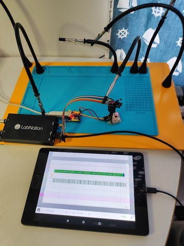
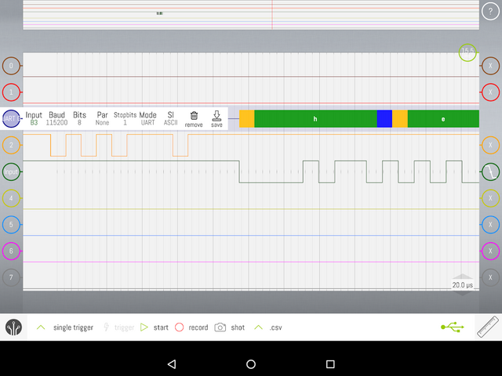

7. Electronics design
Assignment
Individual assignment
- redraw an echo hello-world board, add (at least)
- a button and LED (with current-limiting resistor)
- check the design rules, make it, and test it
- extra credit: simulate its operation
Group assignment
- use the test equipment in your lab to observe the operation of a micro-controller circuit board
KiCad 6
We used KiCad to design the electronics. It’s a widely used open source program and pretty good so there was no need to even evaluate at other options. I have previous experience in electronics design from years ago, but the program used was different and it has been so long since that anyway.
KiCad installation
A version 6 of the KiCad design suite is released recently, on 25th of December 2021. That version upgrade from 5 to 6 is a major change since earlier version was over 3 years old from year 2018. Our Fab Lab had the latest version installed and I wanted to install it on my workstation as well. I have a slightly old Fedora release 34 at my home workstation with only the older KiCad version 5 supported as native. Luckily, the newer version was easily available from the Fedora Copr repository so I installed it. KiCad Install on Fedora.
sudo dnf install dnf-plugins-core
sudo dnf copr enable @ kicad / kicad
sudo dnf install kicad
KiCad Fab Lab settings
Fab electronics component library for KiCad contains all the official components that should be found in every Fab Lab. The components available in the library are easy to use in KiCad and you don't have to look for components elsewhere or design them yourself. There are a huge number of common components in the program anyway and you can use them as well, but then you have to take a closer look at the package of the component that it matches for component in Fab Lab, for example.
I followed the installation instructions for the Fab component library on my home computer and used the following settings:
$ cd ~/fablab/
$ git clone https://gitlab.fabcloud.org/pub/libraries/electronics/kicad.git
 |
| KiCad Configure Paths |
 |
| KiCad Footprint Libraries |
 |
| KiCad Symbol Libraries |
ATtiny 412 board
I did the standard echo hello device with button and led. First we looked Fab Academy board and made almost similar to it, having same micro-controller and UART connected to "FTDI" header, but added led and button too. Used micro-controller ATtiny 412 has very limited amount of I/O pins - only 6 - and even one of those is kinda reserved for the UPDI programmer. I connected LED between PA7 and VCC in series with 1k resistor to limit current. Button is connected between PA6 and ground having also 10k pull-up resistor to Vcc. Pull-up resistor is not mandatory, as I can understand the chip already has integrated pull-ups, that could be enabled by the software but anyhow now pull-up resistor is here still for sure.
BOM exported from KiCad.
| References |
Value |
Footprint |
Quantity |
| C1 |
C |
C_1206 |
1 |
| R1 |
1k |
R_1206 |
1 |
| R2 |
10k |
R_1206 |
1 |
| D1 |
LED |
LED_1206 |
1 |
| U1 |
Microcontroller_ATtiny412_SSFR |
SOIC-8_3.9x4.9mm_P1.27mm |
1 |
| SW1 |
BUTTON_B3SN |
Button_Omron_B3SN_6x6mm |
1 |
| J1 |
Conn_PinHeader_FTDI_1x06_P2.54mm_Horizontal_SMD |
PinHeader_FTDI_01x06_P2.54mm_Horizontal_SMD |
1 |
| J2 |
Conn_PinHeader_1x03_P2.54mm_Horizontal_SMD |
PinHeader_1x03_P2.54mm_Horizontal_SMD |
1 |
I forgot to add C1 value to design. 1uF was used.
 |
| Components |
 |
| KiCad Schematic Editor |
 |
| KiCad PCB Editor |
 |
| KiCad PCB Editor - Board Setup used |
 |
| KiCad Export SVG for Roland MonoFab SRM-20 |
 |
| KiCad Plot Gerber for LPKF ProtoMat S62 |
I exported PCB as a vector two images from KiCad, one image for traces and other image as board outline. After that I used mods tool to make toolpaths for Roland monoFab SRM-20 milling machine. At this point I had a lot of problems - I could not understand why my PCB borders were all the time wrong. I tried all relevant KiCad export settings very many times, tweaked with KiCad PCB borders (Edge Cuts layer) and some other layers but still it was always wrong and mods generated totally bad looking toolpaths which I sure didn't even want to test mill. Eventually I decided to open PCB borders file directly with my browser, Firefox, and saw the borders image were still rendered as badly as mods running on Firefox browser. At that point I started to suspect it might be an issue coused by the used browser and its svg-libraries. Then I decided to install Chromium browser (it is open source version of Google Chrome) as it was available on Fedora package management. That browser shows svg-file correctly, but then I ran other problem with mods when used Chromium browser - it fails to generate toolpath itself! Two steps forward and one step back :( After mods was find out to be broken with both Firefox and Chromium I started looking yet another browser. That browser was Google Chrome. I installed it from package available from vendor site. And finally it was a browser which works with mods on this single case at least. Too many compatibility issues - I have to say I am feeling mods is not best tool to mill PCB boards.
Here is pictures how simple PCB border in SVG format from KiCad is rendered on different applications. Firefox fails it badly.
 |
| PCB borders .SVG on Firefox |
 |
| PCB borders .SVG on Chromium |
 |
| PCB borders .SVG on Google Chrome |
 |
| PCB borders .SVG on Inkscape |
Different PCB mills
From KiCad PCB Editor I made both SVG-images and Gerber files of my PCB design. I made 2 PCBs using different milling machines, Roland MonoFab SRM-20 and LPKF ProtoMat S62. For Roland it was tricky to do PCB with that small traces as I used 0.4mm for Track Width and 0.25mm for Clearance. After two failed attempts I started adjusting trace milling depth from 0.05mm to 0.10mm by manual adjusting cut depth step by step deeper until it was fine. 0.2-0.5mm V-shaped milling bit was used.
 |
| PCB v1 on Roland. It is bad. |
 |
| PCB v2 on Roland. It is OK. |
 |
| PCB v2 on LPKF. It is OK. |
Assembling circuit board boards
 |
| Soldering |
I had milled two similar circuit boards with different milling machines as I wrote above. However, I assembled only one device and it was made on a circuit board made with an LPKF milling machine. Jani wanted one device to be made on a circuit board made with a Roland milling machine, because that milling machine is a milling machine according to the Fab Academy processes.
Fortunately, I still had a circuit board made with Roland in the spring, so I went to get the necessary components from the Fab Lab and made another similar device. I programmed and tested the device in the same way as the first one. Everything worked out without any problems.
The bypass capacitor in the power supply seems to be physically a different size, and I'm not quite sure why. I have either accidentally installed a component of the wrong value on one of the two devices, or the Fab Lab has received new components to replace the ones that have run out, which are physically a little different in size. In any case, the value of the bypass capacitor is not critical and both devices are functional.
Testing the board
 |
| Test setup |
I used Arduino IDE and Fab Academy hello.t412.echo.ino code to test it.
To test LED and button I make minor modifications to this Fab Academy hello echo program.
$ diff hello.t412.echo/hello.t412.echo.ino echo.hello.led.button.t412/echo.hello.led.button.t412.ino
24a25,27
>
> pinMode(PIN_PA6, INPUT); // button
> pinMode(PIN_PA7, OUTPUT); // led
36a40,43
>
> // toggle led when button is pressed
> if (!digitalRead(PIN_PA6))
> digitalWrite(PIN_PA7, !digitalRead(PIN_PA7));
$
The button and LED works as expected. The microcontroller reads the state of the button in the loop at a very high frequency, so during a single physical press, it's status is read many, many times. Therefore, it is random which value happens to stay there, when the button is released.
Compiling:
Sketch uses 2020 bytes (49%) of program storage space. Maximum is 4096 bytes.
Global variables use 91 bytes (35%) of dynamic memory, leaving 165 bytes for local variables. Maximum is 256 bytes.
Programming:
SerialUPDI
UPDI programming for Arduino using a serial adapter
Based on pymcuprog, with significant modifications
By Quentin Bolsee and Spence Konde
Version 1.2.3 - Jan 2022
Using serial port /dev/ttyACM0 at 57600 baud.
Target: attiny412
Set fuses: ['2:0x02', '6:0x04', '8:0x00']
Action: write
File: /tmp/arduino_build_609485/echo.hello.led.button.t412.ino.hex
Pinging device...
Ping response: 1E9223
Setting fuse 0x2=0x2
Writing literal values...
Verifying literal values...
Action took 0.02s
Setting fuse 0x6=0x4
Writing literal values...
Verifying literal values...
Action took 0.02s
Setting fuse 0x8=0x0
Writing literal values...
Verifying literal values...
Action took 0.02s
Finished writing fuses.
Chip/Bulk erase,
Memory type eeprom is conditionally erased (depending upon EESAVE fuse setting)
Memory type flash is always erased
Memory type lockbits is always erased
...
Erased.
Action took 0.01s
Writing from hex file...
Writing flash...
[==================================================] 30/30
Action took 0.65s
Verifying...
[==================================================] 4/4
Verify successful. Data in flash matches data in specified hex-file
Action took 0.42s
Testing serial port:
$ python -m serial.tools.miniterm /dev/ttyUSB0 115200
--- Miniterm on /dev/ttyUSB0 115200,8,N,1 ---
--- Quit: Ctrl+] | Menu: Ctrl+T | Help: Ctrl+T followed by Ctrl+H ---
hello.t412.echo: you typed "F"
hello.t412.echo: you typed "Fa"
hello.t412.echo: you typed "Fab"
hello.t412.echo: you typed "Fab "
hello.t412.echo: you typed "Fab L"
hello.t412.echo: you typed "Fab La"
hello.t412.echo: you typed "Fab Lab"
hello.t412.echo: you typed "Fab Lab "
hello.t412.echo: you typed "Fab Lab O"
hello.t412.echo: you typed "Fab Lab Ou"
hello.t412.echo: you typed "Fab Lab Oul"
hello.t412.echo: you typed "Fab Lab Oulu"
--- exit ---
$
Observe UART data
|  |
| Sniffing the UART signals with a logic analyzer |
I measured the signals from the device UART with LabNation SmartScope. The device has both an oscilloscope and a logic analyzer.
A UART is a slow digital bus with two data lines TX and RX, one for receiving data and the other for transmitting. There is no clock signal at all. Both the oscilloscope and the logic analyzer can measure the signal traveling on the bus, but from slightly different angles. An oscilloscope is more suitable for examining the waveform of a signal, while a logic analyzer is better suited for capturing and examining the data itself that travels on a bus. I connected the device's TX and RX lines using test clips to a logic analyzer and captured data from both buses. I turned the UART decoder on the analyzer and selected ASCII as the data format to be decoded because the device is sending text. This allowed me to easily check what text was transfered between the device and the computer. On that case it can be seen the board responds with a text: hello.t412.echo: you typed "Hello Fab Lab Oulu".
|  |
| UART decoder settings |
Files
Final thoughts
This week I learned the basics of KiCad and gained a lot more experience in PCB milling. I already knew the theory of electronics design at this level, though.
{kind=link}
{kind=link}